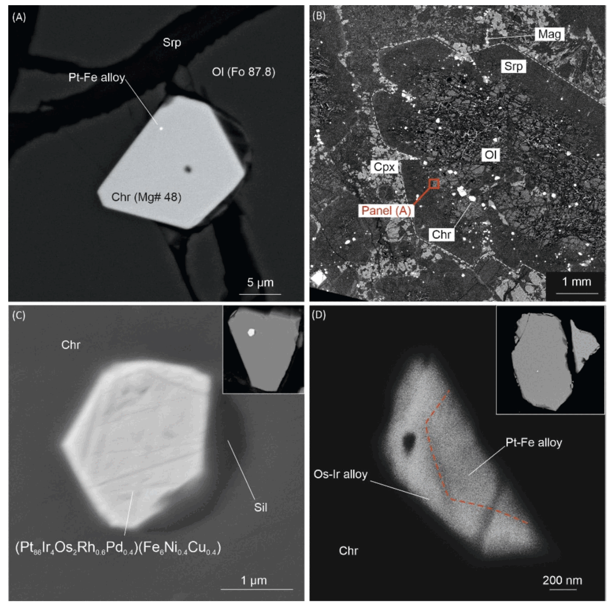

Arc magmas provide one of the clearest ways to study how the mantle wedge is modified by subduction. My work on arc systems focuses on primitive basaltic and picritic rocks that retain information on source composition, oxidation state, and noble metal behaviour before extensive crustal overprint. I am particularly interested in what these rocks reveal about the relationship between slab-derived components, mantle melting, and the geochemical signature of the resulting magmas.

In Kamchatka, I have worked on primitive high-K magmas of the Olyutorsky intra-oceanic arc, including the Tumrok Range, and on noble-metal systematics in Tolbachik lavas. Together, these studies link primitive melt chemistry with broader tectonic and mantle processes. The Olyutorsky rocks show that primitive arc magmas can preserve strong evidence for mantle wedge sources modified by subduction-derived melts and fluids, while still retaining unusually primitive mineral and whole-rock compositions. Later collaborative work on the Tumrok volcano-plutonic complex made it possible to connect volcanic and intrusive expressions of the same arc system. The Tolbachik work adds a metal-focused perspective by tracking how PGE and gold behave during magmatic differentiation and what that behaviour implies for the mantle beneath the arc. In particular, it highlights the role of oxidation state and chromite-related partitioning in controlling Ru and Pd systematics. Across these projects, I use primitive arc magmas as a way to connect petrology, tectonics, and metal geochemistry within a single framework.
